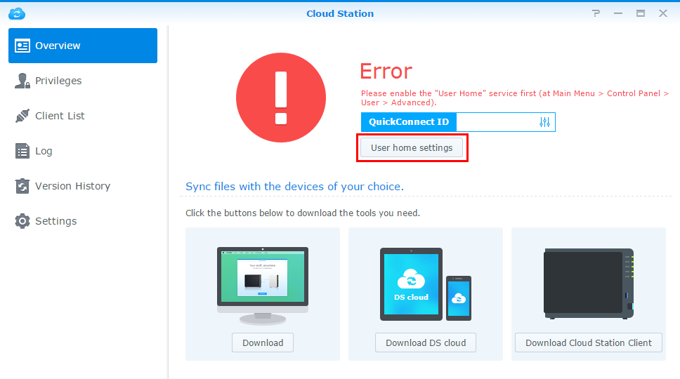
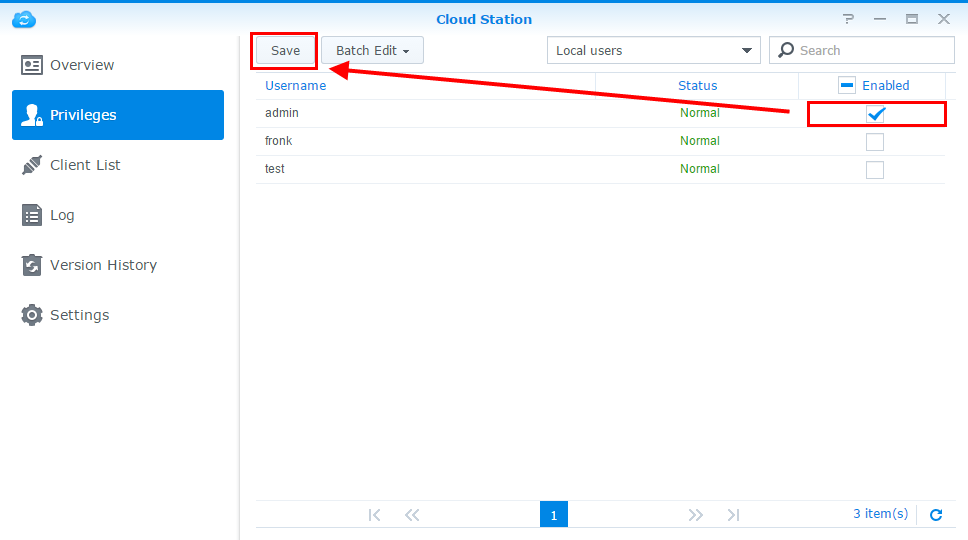
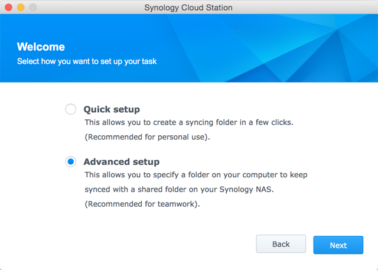

Overview
Cloud Station is not only a sophisticated cross-platform syncing software, users can use it as a smarter means of backing up their personal computers. These are some benefits of using Cloud Station as your backup companion. First of all, real-time replication provides a better RPO, a shorter period in which data might be lost (un-recoverable) from your PC due to a major incident. Not only is it instantaneous, it will also help you save bandwidth drastically, compared to traditional backup which uses up large amounts of bandwidth at a given time. You can easily filter out the files within the same folder which you don't want backed up, by setting the file size or file type on your PC client. Cloud Station can also retain up to 32 history versions of a single file which Cloud Station allows you to restore to a PC client from the server (NAS) side.
1. Set up Cloud Station on eCore Server
- Log in to DSM using an account belonging to the administrator.
- Launch Cloud Station.
- If you have not enabled the user home feature, you'll be prompted to do so. Click OK. 
- You'll be redirected to the user settings page. Enable user homes and click Apply.
- Now go back to Cloud Station and you'll be prompted to enable it. Click Yes.
- Go to Privileges and specify which users will be able to use Cloud Station. Click Save. 
- Set up a shared folder on your eCore Server for the purpose of backup. To do this, go to Control Panel > Shared Folder and click Create.
- Name your folder and fill in the details accordingly. Click OK. For example, we'll name the folder Backup.
- In the Permissions tab, specify which users will be able to access the folder. For example, we'll give admin read/write permissions to the folder. Click OK.
- Go to Cloud Station > Settings > Sharing and select the Backup folder and click Enable.


2. Set up Cloud Station on your Windows PC
Follow the steps to set up Cloud Station on your Mac or PC
2.1 For PC
- Go to Cloud Station > Overview and click the Download button.
- Click the button to download Cloud Station for Windows PC. (You can also download Cloud Station from the Synology Download Center.)
- Launch the installer on your computer and follow the instructions to install Cloud Station.
- After installation, run Cloud Station on your computer. Click Start Now.
- Enter the address for the eCore Server running Cloud Station (or QuickConnect ID), username, and password. (You can also click the search icon on the right, and Cloud Station will automatically search for other eCore Server within your LAN). Click Next.
- Select how you want to set up your task (here we'll select Advanced Setup, since we are setting up a folder specifically for backup). Click Next.
- Select a folder on your computer to keep synced with the Backup folder you created earlier on your eCore Server. Click Next.
- ClickDone to complete setup.


To create another task:
- Go to Cloud Station > Settings and enable a shared folder for this new task. My example isphoto. Make sure you have read/write privileges for photo.
- Back on Cloud Station on your PC, click Create.
- Select a eCore Server for your new task. Here we'll select Connected eCore Server since we are creating another task for the same eCore Server. Click Next.
- Select Advanced setup and follow the rest of the wizard to continue setup.


2.2 For Mac
- Go to Cloud Station > Overview and click the Download button.
- Click the button to download Cloud Station for Mac. (You can also download Cloud Station from the Synology Download Center.)
- Launch the installer on your computer and follow the instructions to install Cloud Station.
- After installation, run Cloud Station on your computer. Click Start Now.
- Enter the address for the eCore Server running Cloud Station (or QuickConnect ID), username, and password. (You can also click the search icon on the right, and Cloud Station will automatically search for other eCore Server within your LAN). Click Next.
- Select how you want to set up your task (here we'll select Advanced Setup, since we are setting up a folder specifically for backup). Click Next. 
- Select a folder on your computer to keep synced with the Backup folder you created earlier on your eCore Server. Click Next.
- ClickDone to complete setup.


To create a new task:
- Go to Cloud Station > Settings and enable a shared folder for this new task. My example isphoto. Make sure you have read/write privileges for photo.
- Back on Cloud Station on your computer, click Create.
- Select a eCore Server for your new task. Here we'll select Connected eCore Server since we are creating another task for the same eCore Server. Click Next.
- Select Advanced setup and follow the rest of the wizard to continue setup.


3. Retrieve data from Cloud Station
If you accidentally remove or overwrite a file, Cloud Station allows you to easily retrieve it.
3.1 To download a previous version of a synced file on PC
- Click the Cloud Station icon in your system tray and click the folder icon.
- Right-click your selected file and choose Synology Cloud Station > Browse previous versions.
- Find the version you want to download and click on the download icon.
- Enter the file name and choose the destination to save the file.


3.2 To download a previous version of a synced file on Mac
- Click the Cloud Station icon in your system tray and click the folder icon.
- Right-click your selected file and choose Synology Cloud Station > Browse previous versions.
- Find the version you want to download and click on the download icon.
- Enter the file name and choose the destination to save the file.


3.3 To download or restore a previous version of a synced file on from Cloud Station
- Go to Cloud Station > Version History and select the Backup folder you previously created.
- Select the file you want to retrieve and click Action > Browse previous versions.
- Select the version of the file you want to download and click Download. Or, if you are sure you want the selected version restored, click Restore and it will overwrite your current version.


4. Important notes
- Always keep historical versions in case a file is removed or overwritten by accident.
- In Global Settings, you can configure whether a file will be refetched from your NAS or be deleted on your NAS when you delete a file on your PC.
5. Further protection of your data
For more ways to protect and back up your data, click here to see tutorials detailing other backup services offered on DSM.